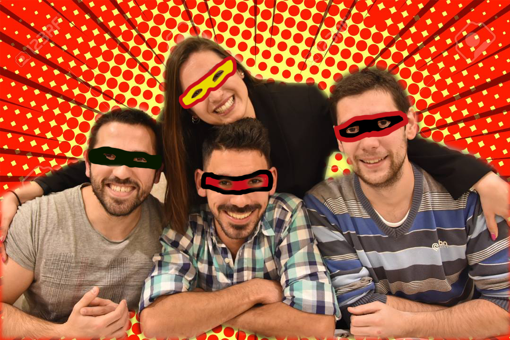

About
Richard Cross é um personagem fictício, um super-herói da banda desenhada portuguesa publicada pela PC (Portela City) Comics.
A identidade secreta de Richard Cross é Ricardo Cruz, um engenheiro informático quase milionário - já lhe oferecem contratos anuais de bueda mil euros na Alemanha, vejam bem!
Considerado um dos super-heróis mais icónicos do mundo, RC dedica a vida a combater criminosos na cidade de Lisbotham - sobretudo ali na rua da Portela e às vezes na rua da WTVision visto que o DaciaMobile é novo e não convém meter muitos km no bicho.
Ricardo Cruz, o milionário, disfarçado com cabelo para ninguém o reconhecer.
Richard's Powers
- Inexhaustible Wealth - de novo, Richard Cross é makin' it rain all daaaay
- Combat Strategy - é muito à base de todo um físico musculado, muita prota, muito ferro no gym (usem o código PROZISRC para ele ter barritas energéticas à borla).
- Brilliant Deductive Skill - tem um ouvido de tísico, conseguindo ficar a par de tudo o que ocorre à sua volta. Outros, cidadãos anónimos, poderão chamar esta qualidade de “cusquice” mas não é de ligar porque haters gonna hate!
- Advanced Technology - é dono de todo o tipo de restos e carcaças de PCs antigos.
Richard's Friends
Richard Cross vive na PortelaCaveSuperSecreta com mais 3 super-heróis.
Estes 3 são super-heróis de segunda - têm de pagar renda ao Richard Cross todos os meses e viver sobre as suas regras visto este ser o proprietário da CaveSuperSecreta.
O que pouca gente sabe é que RC tem um soft spot: IronRita, uma mastermind que com os seus poderes manipulativos acaba por ser ela a mandar nesta merda toda! - #girlpower
